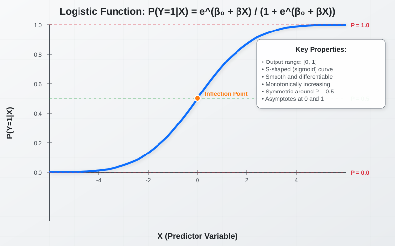
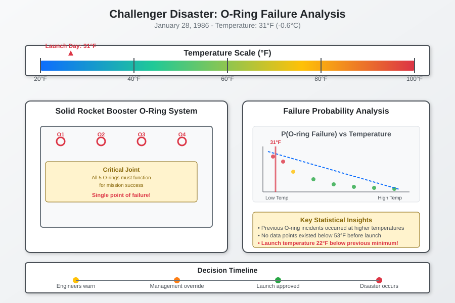
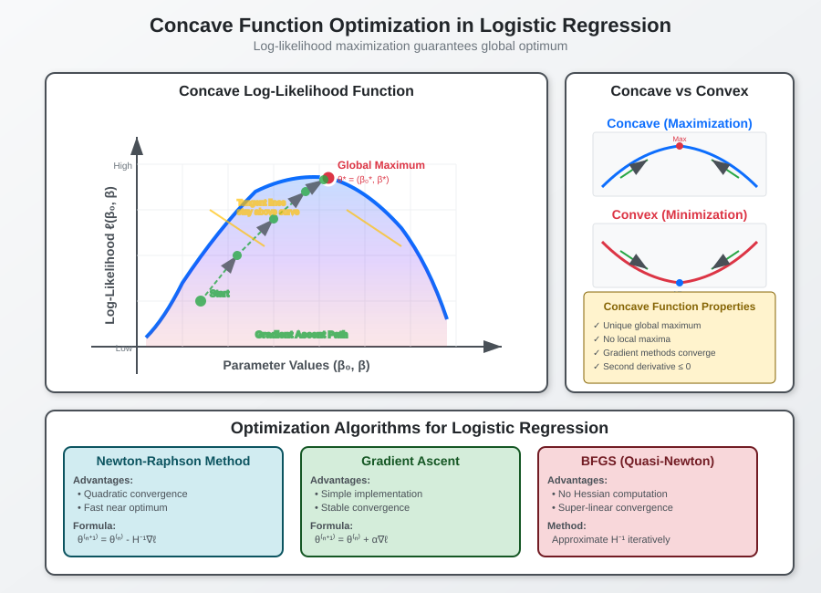
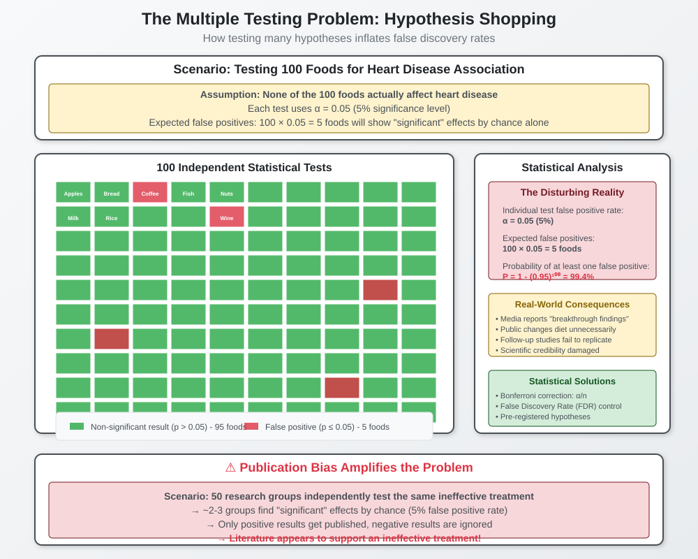

Logistic Regression and Parameter Estimation Methods
📋 Quick Navigation
- Introduction to Logistic Regression
- The Challenger Disaster Case Study
- Maximum Likelihood Estimation
- Parameter Estimation Algorithms
- Statistical Pitfalls and Best Practices
- Real-world Applications
- Implementation Guide
- References & Further Reading
🎯 Introduction to Logistic Regression
Logistic regression is a fundamental statistical method for modeling the probability of binary outcomes. Unlike linear regression, which predicts continuous values, logistic regression estimates the likelihood of an event occurring given one or more predictor variables.
The Logistic Function
The core of logistic regression is the logistic function, which maps any real number to a value between 0 and 1:
Where:
- P(E|X) is the probability of event E given predictor X
- β₀ is the intercept coefficient
- β is the slope coefficient
- e is Euler's constant (≈ 2.71828)

Key Applications
- Credit Card Fraud Detection: Estimating probability of fraudulent transactions
- Medical Diagnosis: Predicting likelihood of disease development
- Insurance Claims: Assessing probability of fraudulent claims
- Risk Assessment: Evaluating various business and operational risks
🚀 The Challenger Disaster Case Study
The 1986 Space Shuttle Challenger disaster serves as a powerful example of how statistical methods could have prevented catastrophe.
Background
On January 28, 1986, NASA launched the Challenger despite unusually cold temperatures. Engineers had expressed concerns about O-ring reliability at low temperatures, but managers argued that some failures had occurred at high temperatures as well.
The Statistical Question
Could logistic regression have predicted the disaster?
The key was estimating: P(All 5 O-rings fail | Temperature = T)

Lessons Learned
- All 5 O-rings needed to fail for catastrophic failure
- Temperature was a critical predictor variable
- Historical failure data existed but wasn't properly analyzed
- Statistical modeling could have quantified the risk
This case demonstrates the critical importance of: 1. Proper statistical analysis of safety data 2. Understanding multiplicative failure probabilities 3. Taking engineering concerns seriously when backed by data
📊 Maximum Likelihood Estimation
Maximum Likelihood Estimation (MLE) is the mathematical foundation for estimating logistic regression parameters. The principle is elegantly simple: find the parameter values that make the observed data most likely.
Mathematical Foundation
Given data points (X₁, Y₁), (X₂, Y₂), ..., (Xₙ, Yₙ), where Y takes values 0 or 1:
For a single observation:
For all observations (assuming independence):
Log-Likelihood Function
Taking the logarithm simplifies the optimization:

Example: Diabetes Prediction
Consider a simple example predicting diabetes based on body weight:
| Body Weight (lbs) | Diabetes (1=Yes, 0=No) |
|---|---|
| 186 | 0 |
| 132 | 0 |
| 156 | 1 |
| 220 | 1 |
| 190 | 0 |
| 152 | 0 |
| 285 | 1 |
| 172 | 1 |
| 205 | 1 |
| 146 | 0 |
Estimated Parameters: - β₀ = -3.6 - β = 0.02
Resulting Model:
⚙️ Parameter Estimation Algorithms
Finding optimal parameters requires sophisticated optimization algorithms since closed-form solutions don't exist for logistic regression.
Optimization Approaches
1. Brute Force Method (Not Recommended)
- Try all possible parameter combinations within a range
- Limitations:
- Computationally expensive
- Limited precision
- Doesn't scale with multiple variables
2. Newton's Method
- Uses second derivatives (Hessian matrix)
- Fast convergence for well-behaved problems
- Can be unstable with poor starting values
3. Gradient Descent
- Uses first derivatives only
- More stable than Newton's method
- Slower convergence but more reliable
Concave Optimization
The log-likelihood function is concave, which guarantees: - A unique global maximum exists - Optimization algorithms will converge to the optimal solution - No local maxima to get trapped in

Multi-variable Extension
For multiple predictors (e.g., weight + genetics):
Example coefficients: - β₀ = -2.7 - β_w = 0.0045 (weight effect) - β_g = 0.2 (genetic effect per affected parent)
⚠️ Statistical Pitfalls and Best Practices
Understanding common statistical mistakes is crucial for reliable analysis and avoiding false discoveries.
The Multiple Testing Problem
Scenario: Testing 100 foods for heart disease association with p > 0.95 significance threshold.
The Problem: - Each test has 5% false positive rate - With 100 independent tests: P(at least one false positive) = 99.4% - Even with no real effects, we expect ~5 false discoveries

Hypothesis Shopping
Definition: Looking at data first, then forming hypotheses to test.
Why it's problematic: - Inflates false discovery rates - Cherry-picks interesting results - Ignores negative findings
Examples: - Testing drug variants across multiple cancer types and demographics - Genome-wide association studies with thousands of genes - Exploratory data analysis without proper correction
Publication Bias
The Process: 1. 50 research groups study the same ineffective treatment 2. ~2-3 groups find "significant" effects by chance (5% false positive rate) 3. Only positive results get published 4. Literature appears to support the ineffective treatment
Best Practices
1. Multiple Testing Correction
- Bonferroni Correction: Divide α by number of tests
- False Discovery Rate (FDR): Control proportion of false discoveries
- Pre-registration: Specify hypotheses before seeing data
2. Validation Strategies
- Hold-out validation: Reserve data for final testing
- Cross-validation: Systematic data splitting
- Replication studies: Independent verification
3. Big Data Considerations
- Larger datasets enable more complex pattern searching
- Machine learning can find spurious patterns in noise
- Requires even more rigorous validation procedures
🌍 Real-world Applications
Healthcare Applications
Disease Risk Prediction
# Example: Heart disease prediction
P(heart_disease | age, weight, bp, cholesterol) =
sigmoid(β₀ + β₁×age + β₂×weight + β₃×bp + β₄×cholesterol)
Clinical Trial Analysis
- Treatment efficacy assessment
- Patient stratification
- Adverse event prediction
Business Applications
Credit Scoring
# Credit default prediction
P(default | income, debt_ratio, credit_history, employment) =
sigmoid(β₀ + β₁×income + β₂×debt_ratio + β₃×credit_history + β₄×employment)
Marketing Analytics
- Customer conversion probability
- Churn prediction
- A/B testing analysis
Risk Management
- Insurance claim fraud detection
- Operational risk assessment
- Supply chain disruption prediction
Comparison with Other Methods
| Method | Advantages | Disadvantages | Best Use Cases |
|---|---|---|---|
| Logistic Regression | Interpretable, fast, probabilistic output | Linear decision boundary, requires feature engineering | High-stakes decisions, regulatory compliance |
| Random Forest | Handles non-linearity, feature importance | Less interpretable, can overfit | Complex feature interactions |
| Neural Networks | Highly flexible, automatic feature learning | Black box, requires large data | Image/text classification, complex patterns |
| SVM | Good with high dimensions, kernel trick | Parameter tuning sensitive | High-dimensional sparse data |
💻 Implementation Guide
Python Implementation with Scikit-learn

import numpy as np
import pandas as pd
from sklearn.linear_model import LogisticRegression
from sklearn.model_selection import train_test_split
from sklearn.metrics import classification_report, confusion_matrix
import matplotlib.pyplot as plt
# Load and prepare data
data = pd.read_csv('medical_data.csv')
X = data[['weight', 'age', 'blood_pressure']]
y = data['diabetes']
# Split data
X_train, X_test, y_train, y_test = train_test_split(
X, y, test_size=0.2, random_state=42
)
# Fit logistic regression
model = LogisticRegression(max_iter=1000)
model.fit(X_train, y_train)
# Make predictions
y_pred = model.predict(X_test)
y_prob = model.predict_proba(X_test)[:, 1]
# Evaluate model
print("Coefficients:", model.coef_)
print("Intercept:", model.intercept_)
print("\nClassification Report:")
print(classification_report(y_test, y_pred))
Manual Implementation with Maximum Likelihood
import numpy as np
from scipy.optimize import minimize
def sigmoid(z):
"""Logistic function"""
return 1 / (1 + np.exp(-np.clip(z, -500, 500)))
def log_likelihood(params, X, y):
"""Negative log-likelihood for minimization"""
linear_pred = X @ params
ll = y * np.log(sigmoid(linear_pred)) + (1 - y) * np.log(1 - sigmoid(linear_pred))
return -np.sum(ll)
def fit_logistic_regression(X, y):
"""Fit logistic regression using MLE"""
# Add intercept column
X_with_intercept = np.column_stack([np.ones(X.shape[0]), X])
# Initialize parameters
initial_params = np.zeros(X_with_intercept.shape[1])
# Optimize
result = minimize(
log_likelihood,
initial_params,
args=(X_with_intercept, y),
method='BFGS'
)
return result.x
# Example usage
X = np.array([[180], [150], [200], [170], [220]])
y = np.array([0, 0, 1, 0, 1])
coefficients = fit_logistic_regression(X, y)
print(f"Intercept: {coefficients[0]:.3f}")
print(f"Weight coefficient: {coefficients[1]:.6f}")
Model Validation and Diagnostics
from sklearn.metrics import roc_auc_score, roc_curve
import matplotlib.pyplot as plt
# ROC Curve
fpr, tpr, _ = roc_curve(y_test, y_prob)
auc = roc_auc_score(y_test, y_prob)
plt.figure(figsize=(8, 6))
plt.plot(fpr, tpr, label=f'ROC Curve (AUC = {auc:.3f})')
plt.plot([0, 1], [0, 1], 'k--', label='Random Classifier')
plt.xlabel('False Positive Rate')
plt.ylabel('True Positive Rate')
plt.title('ROC Curve')
plt.legend()
plt.grid(True)
plt.show()
# Feature importance (coefficient magnitudes)
feature_importance = pd.DataFrame({
'feature': X.columns,
'coefficient': model.coef_[0],
'abs_coefficient': np.abs(model.coef_[0])
}).sort_values('abs_coefficient', ascending=False)
print("Feature Importance:")
print(feature_importance)
📚 References & Further Reading
Academic Papers
- "Regression Models and Life-Tables" - Cox, D.R. (1972)
- Journal of the Royal Statistical Society
-
Foundational work on survival analysis and logistic regression
-
"The Elements of Statistical Learning" - Hastie, Tibshirani, Friedman
- Stanford University
-
Comprehensive coverage of statistical learning methods
-
"An Introduction to Statistical Learning" - James, Witten, Hastie, Tibshirani
- ISLR Book
- Accessible introduction with R implementations
Implementation Resources
- Scikit-learn Logistic Regression Documentation
- Official Documentation
-
Comprehensive API reference and examples
-
Logistic Regression from Scratch
- Towards Data Science
- Step-by-step implementation guide
Historical Cases
- "The Challenger Launch Decision" - Vaughan, D.
- Analysis of organizational factors in the Challenger disaster
-
"Risk Analysis of the Space Shuttle" - Feynman, R.P.
- Rogers Commission Report
- Statistical analysis of shuttle safety
Advanced Topics
- "Why Most Published Research Findings Are False" - Ioannidis, J.P.A.
- PLOS Medicine
- Critical examination of statistical practices in research
🏷️ Tags
logistic-regression maximum-likelihood-estimation statistical-modeling machine-learning parameter-estimation optimization challenger-disaster hypothesis-testing medical-statistics risk-analysis
Last Updated: November 2024 | Version: 1.0.0